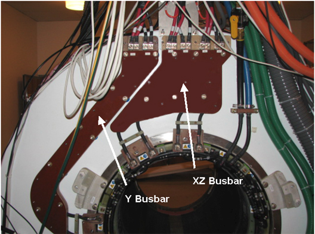
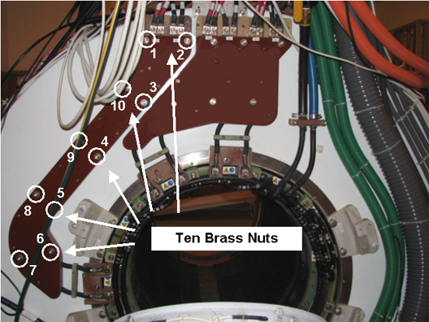
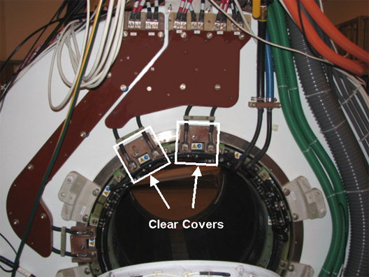
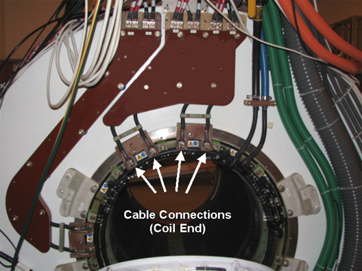
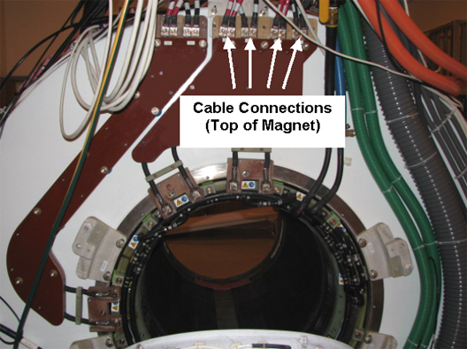
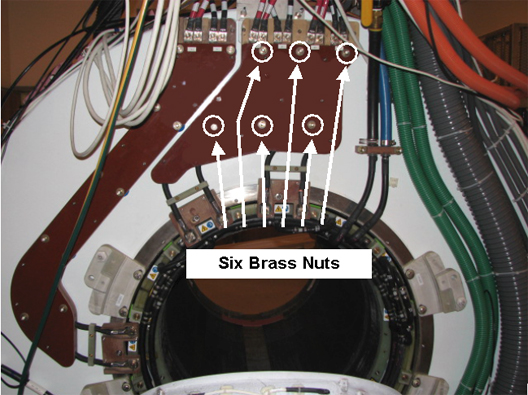
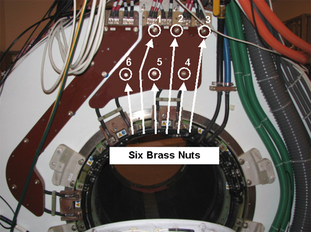

Operating Documentation
Direction 5670000, Rev# 1
Module Version 5.0, Version Date 12/16/09
Operating Documentation |
| ||||
| Strong Magnetic field! | ||||
| ferrous materials can become dangerous projectiles in the presence of the magnetic field produced by the magnet. | ||||
| Do not bring any ferromagnetic tools or equipments into the magnet room. |
| ||||
| ELECTRICAL SHOCK HAZARD! | ||||
| Contact with the connectors leading to an energized power supply can cause electrical shock. | ||||
| Follow lockout/tagout procedures while performing services to electrical connection components. |
| Condition | Reference | Effectivity |
|---|---|---|
Remove the patient bridge. (See Bridge and Longitudinal Drive Belt Replacement.) | - | - |
Remove magnet enclosure rear end bell. (See Rear End Bell Removal and Installation.) | - | - |
Move rear pedestal away from the magnet to allow access to the busbars. Note: Slack in the cables going to the rear pedestal should allow it to be moved back without disconnecting cables. However, it is possible that some cables may need to be disconnected. | - | - |
There are two separate busbars on the MR450w system; Y busbar assembly and the XZ busbar assembly. Typically, only one busbar will be replaced at one time. (See Illustration 1.)
Illustration 1: Y and XZ Busbars

Follow all safety lockout/tagout procedures:
Remove 4 (four) M4 x 10mm screws and the Safety Cover Top (clear plastic) from the busbar. (See Illustration 2.)
| NOTE: | DO NOT remove the clamps on the busbar leads. |
Remove 2 (two) M10 brass nuts and Nord-lock washers that are securing the busbar lugs to the coil. Slide the busbar terminal lugs from the lugs on the coil. (See Illustration 3.) Slide the cable lugs from of the studs.
At the top of the busbar, remove 2 (two) screws and plastic cover from the busbar.
At the top of the busbar, remove the 4 (four) M10 brass nuts and Nord-lock washers that are securing the busbar lugs to the magnet. Slide busbar terminal lugs from the studs on the busbar. (See Illustration 4.)
Remove the 10 (ten) brass nuts and G10 washers that are securing the Y busbar to the magnet. (See Illustration 5.)
| NOTE: | DO NOT lift the busbar assembly by holding the leads. |
| NOTE: | Make sure the phenolic spacers and rubber washers remain on each mounting stud. |
The busbar assembly can now be removed from the magnet.
Make sure a phenolic washers and rubber washer are on each mounting stud. Make sure the coil side mating surface is clean and void of epoxy.
| NOTE: | Before installing the replacement busbar, inspect the surface that will connect the gradient coil and cables for oxidation. If the surface is oxidized, clean the surface. |
| NOTE: | DO NOT remove the clamps on the busbar leads. |
| NOTE: | DO NOT lift the busbar assembly by holding the leads. |
Slide the Y busbar assembly (with leads hanging down) onto the 10 (ten) mounting studs.
Apply Loctite 271 (approximately 1 or 2 drops) to the threads of each mounting stud and install a G10 washer and brass nut onto each mounting stud.
Starting at the top and moving clockwise between mounting studs, hand tighten each nut evenly. Again moving clockwise between studs, tighten one full turn (1/2 turn at a time). (See Illustration 6.)
Illustration 6: Location of Brass Nuts - Y Busbar

Slide a copper shim/spacer (5344896) and busbar terminal lugs onto the studs of the magnet.
| NOTE: | Always use the new Nord-lock washers that come with the
FRU package. DO NOT reuse the old Nord-lock
washers. Nord-lock washers consist of two pieces, which are generally glued together. Always use a complete set with two pieces joined together in correct orientation. DO NOT use a separated single piece. |
Install Nord-lock washers (new) and brass nuts onto the studs of the magnet. Hand tighten brass nuts plus a half turn with a 17mm non-magnetic wrench. Do not over-tighten nuts.
At the top of the busbar, install plastic cover and 2 (two) screws to the busbar.
Install Nord-lock washers (new) and brass nuts onto the studs of the coil. Hand tighten brass nuts plus a half turn with a 17mm non-magnetic wrench. Do not over-tighten nuts.
| NOTE: | Proper torque to the nuts holding the busbar lugs is critical to the long-term stability of the gradient subsystem. |
| NOTE: | Check and make sure the safety cover does not touch the XRMw gradient coil (there should be approximately 3mm gap between the two). If they are touching, insert a G10 flat washer between the turtle ring (black plastic flange ring) and the base part of the safety cover. |
Install plastic cover and 4 (four) M4 x 10mm screws to the busbar.
Remove 8 (eight) M4 x 10mm screws and two Safety Cover Tops (clear plastic) from the busbar. (See Illustration 7.)
Illustration 7: XZ Busbar Safety Covers

Remove 4 (four) M10 brass nuts and Nord-lock washers that are securing the busbar lugs to the coil. (See Illustration 8.)
Illustration 8: Removing the Brass Nuts and Nord-lock Washers - Coil End

At the top of the busbar, remove 3 (three) screws and plastic cover from the busbar.
Remove 8 (eight) M10 brass nuts and Nord-lock washers that are securing the busbar lugs to the magnet. (See Illustration 9.)
Illustration 9: Disconnecting the Gradient Power Cables - Magnet End

Remove the 6 (six) brass nuts and washers that are securing the XZ busbar to the magnet. (See Illustration 10.)
Illustration 10: XZ Busbar Mounting Points

| NOTE: | DO NOT lift the busbar assembly by holding the leads. |
The busbar can now be removed from the magnet.
Make sure a phenolic washers and rubber washer are on each mounting stud. Make sure the coil side mating surface is clean and void of epoxy.
| NOTE: | Before installing the replacement busbar, inspect the surface that will connect the gradient coil and cables for oxidation. If the surface is oxidized, clean the surface. |
| NOTE: | DO NOT remove the clamps on the busbar leads. |
| NOTE: | DO NOT lift the busbar assembly by holding the leads. |
Slide the XZ busbar assembly (with leads hanging down) onto the 6 (six) mounting studs.
Apply Loctite 271 (approximately 1 or 2 drops) to the threads of each mounting stud and install a G10 washer and brass nut onto each mounting stud.
Starting at the top and moving clockwise between mounting studs, hand tighten each nut evenly. Again moving clockwise between studs, tighten one full turn (1/2 turn at a time). (See Illustration 11.)
Illustration 11: Location of Brass Nuts - XZ Busbar

Slide a copper shim/spacer (5344896) and busbar terminal lugs onto the studs of the magnet.
| NOTE: | Always use the new Nord-lock washers that come with the
FRU package. DO NOT reuse the old Nord-lock
washers. Nord-lock washers consist of two pieces, which are generally glued together. Always use a complete set with two pieces joined together in correct orientation. DO NOT use a separated single piece. |
Install Nord-lock washers (new) and brass nuts onto the studs of the magnet. Hand tighten brass nuts plus a half turn with a 17mm non-magnetic wrench. Do not over-tighten nuts.
At the top of the busbar, install plastic cover and 3 (three) screws to the busbar.
Slide a copper shim/spacer (5344896) and busbar terminal lugs onto the studs of the coil.
Install Nord-lock washers (new) and brass nuts onto the studs of the magnet. Hand tighten brass nuts plus a half turn with a 17mm non-magnetic wrench. Do not over-tighten nuts.
| NOTE: | Proper torque to the nuts holding the busbar lugs is critical to the long-term stability of the gradient subsystem. |
Install 2 (two) plastic covers and 8 (eight) M4 x 10mm screws to the busbar.
Install enclosure for rear end bell. (See Rear End Bell Removal and Installation.)
Install rear pedestal.
Install patient bridge. (See Bridge and Longitudinal Drive Belt Replacement.)
Replace all covers that were previously removed.
Remove lockout/tagout to turn system on.
Execute DQA II to verify proper geometry. (See DQA II Tool and Troubleshooting.)
Execute EPI White Pixel Test to analyze raw data for white pixel artifacts. (See EPI - White Pixel Test - Full Mode.)